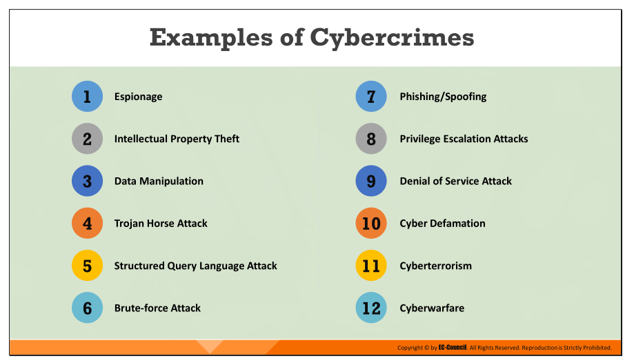
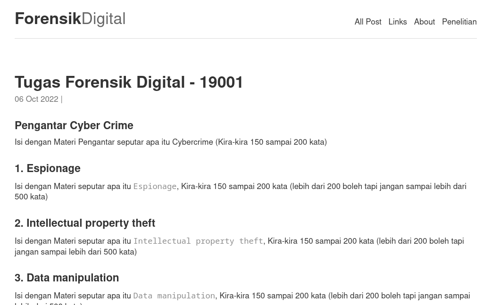
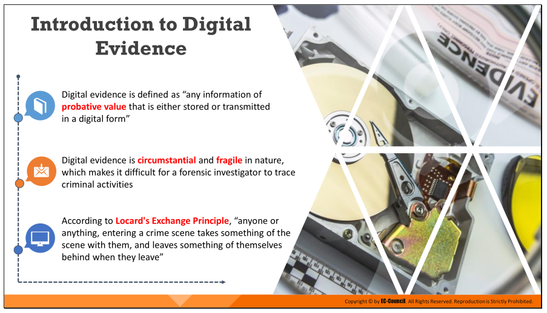
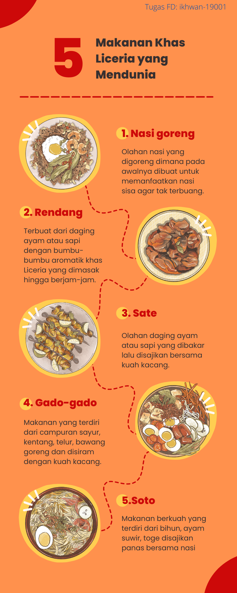

Kuliah FORENSIK DIGITAL
PENGGANTI PERTEMUAN EMPAT 04 - TUGAS:
| Status | : Online |
| Waktu | : 03/11/2022 |
| Tema | : FORENSIK DIGITAL - Cybercrime |
| Pertemuan | : Pertemuan Ke-4 |
Buat Artikel Tentang CYBERCRIME
- Untuk Pengganti Pertemuan ke-4, anda diminta untuk membuat Artikel dengan materi tentang
CYBERCRIMEdengan ISI MATERI mengikuti POIN-POIN yang ada pada GAMBAR DIBAWAH !. - Tulis Materi dengan mengikuti format
Markdownsesuai dengan file yang saya sharing berikut ini: Contoh File Markdown Ini - Download atau Copy dan simpan dengan NAMA FILE:
2022-11-11-tugas-NPM.md(ubah NPM dengan lima digit terakhir npm anda) -
Ubah bagian
titledanauthoryang ada dibagian pertama/atas dari file dengan NPM anda (Lima digit terakhir) dan isi NAMA_ANDA--- title: Tugas Forensik Digital - NPM category: Tugas P4 author: NAMA_ANDA published: true ---Menjadi
--- title: Tugas Forensik Digital - 19001 category: Tugas P4 author: Ikhwan N. Elyas published: true --- - Isi dan lengkapi dari file yang telah anda copy atau download dengan materi dari 12 poin tentang Cybercrime sesuai yang ada di gambar dibawah !,
- Setelah itu, jika telah selesai silahkan UPLOAD/KIRIM ke
Google Drive inike masing-masing FOLDER yang sudah anda buat SEBELUMnya (Lihat INSTRUKSI pada TUGAS Pertemuan Ke-3 sebelumnya dibawah). - Berikut ini materi dari poin 1 sampai 12 yang menjadi materi yang harus anda susun:

CONTOH TAMPILAN TUGAS ANDA
- Anda bisa masuk ke LINK INI untuk melihat contoh tapilannya
- Atau File yang anda tulis nantinya akan menghasilkan tampilan sebagaimana dibawah :

PENGGANTI PERTEMUAN TIGA 03 - TUGAS:
| Status | : Online |
| Waktu | : 03/11/2022 |
| Tema | : FORENSIK DIGITAL - BUKTI DIGITAL |
| Pertemuan | : Pertemuan Ke-3 |
Tugas Bukti Digital

1. Buat InfoGrafis tentang BUKTI DIGITAL
- Buat INFOGRAFIK dengan TEMA tentang “BUKTI DIGITAL”
- Cari Materi tentang “Bukti Digital” dan buat kesimpulnya berupa poin-point dalam bentuk INFOGRAFIK yang menarik,
- Simpan File Hasilnya dalam format Gambar
PNG, dengan Nama file:tugas-fd-p3-NPM.png, silahkan ubahNPMdengan NPM anda sendiri (CONTOH:tugas-fd-p3-19001.png). - Setelah itu buka LINK
Google Drive inidan BUAT FOLDER dan beri NAMA FOLDER dengan NPM anda masing masing, - Setelah itu
UPLOADTugas anda ke dalam folder NPM yang sudah anda buat sebelumnya !. - Selanjutnya, Tugas-Tugas yang sudah TER-UPLOAD akan DITAMPILKAN DI WEB INI.
- Berikut CONTOH INFOGRAFIK dengan tema “Makanan Khas …” (Ini hanya sebagai CONTOH), silahkan sesuaikan materinya dengan Tugas yang diberikan dan TEMA-nya (Tema Infografis: dari warna dan model) silahkan pilih sendiri tersedia di LINK yang sudah dibagi online dibawah.

2. TOOLs untuk Membuat INFOGRAFIK
- Infografik Tool - Canva
- Infografik Tool - https://venngage.com/
- Atau Silahkan pilih tool yang anda anggap lebih mudah…
PERTEMUAN PERTAMA 01 :
| Status | : Offline |
| Waktu | : 30/09/2022 |
| MK | : FORENSIK DIGITAL - P1 |
| Tema | : Arahan dan Kontrak Kuliah |
Variabel dan Persentase Penilaian :
- Absen : 40 %
- Absen Untuk Pertemuan Online dihitung berdasarkan yang mengumpulkan file Tugas Pengganti Pertemuan yang di-Onlinekan
- Tugas : 40 %
- Tugas yang AKAN DINILAI adalah tugas yang dikerjakan dan dikumpulkan SESUAI DENGAN KETENTUAN, dan dikupul ke
Google Drive(nanti di-share linknya) - Setiap tugas akan disampaikan ketentuan apa saja yang harus dipenuhi, Usahakan untuk memenuhi semua ketentuan yang ditetapkan oleh dosen.
- Tugas yang AKAN DINILAI adalah tugas yang dikerjakan dan dikumpulkan SESUAI DENGAN KETENTUAN, dan dikupul ke
- UTS dan UAS : 20 % (UTS 10% dan UAS 10%)
By: Ikhwan@fedora37.linux